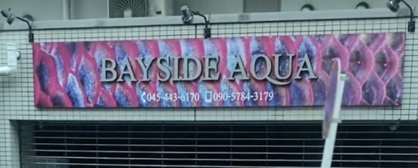
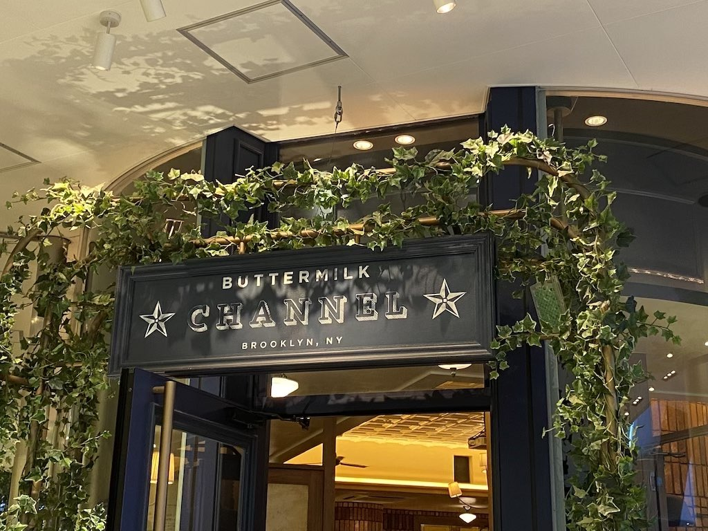
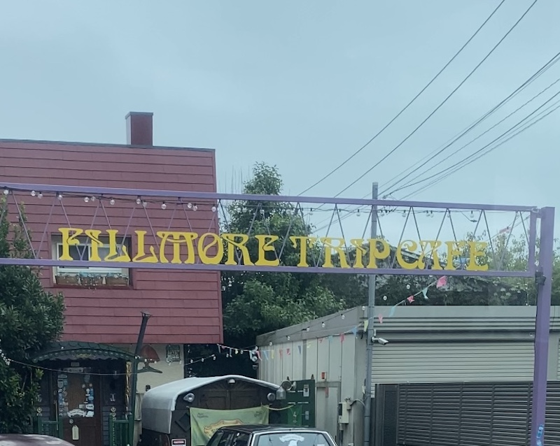

デザイン演習 第2回
1枚目

この写真は戸塚駅に向かう道で撮影した写真です。一見Barのような見た目をしていますが、
看板にAQUAと書いてあるようにこちらは熱帯魚を販売しており、よく見ないと分からない雰囲気が良いと思いました。
２枚目

こちらは横浜ベイクォーターにあるお店で、看板の周りに緑を使い見た目もお洒落な、
レストランです。見た目から入って見たいと思わせてくれる雰囲気があるなと思いました。
3枚目

こちらは1枚目と同様、駅に向かう道で撮影しました。
見た目のインパクトや細部までこだわられたお店で、一度見たら印象付けられるところがいいと思いました。
日時：10/10 撮影者：矢嶋未海
トップページに戻る